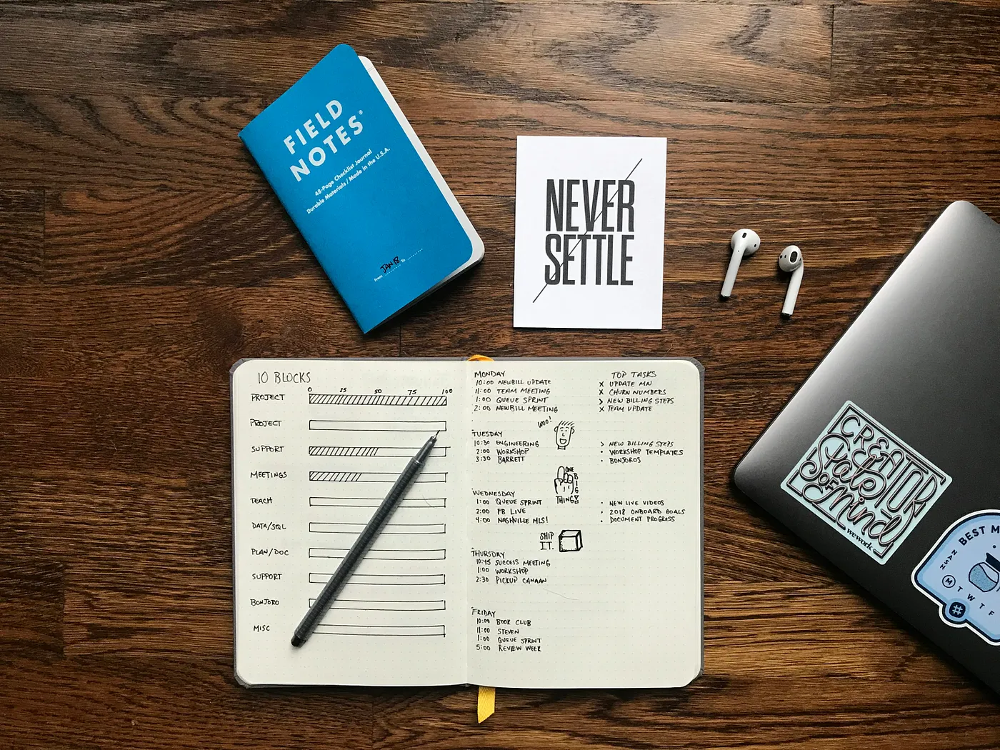

What I Write About
Career Growth
My unfiltered take on recruiting and career development based on industry standards and my own experience.
Explore Articles →Tech Insights
I write about both technical topics and general tech themes, from data and stats to the shifts shaping tech.
Explore Articles →Personal Growth
I share ideas on personal growth, from personal finance to building systems for productivity and self-improvement.
Explore Articles →My Articles

